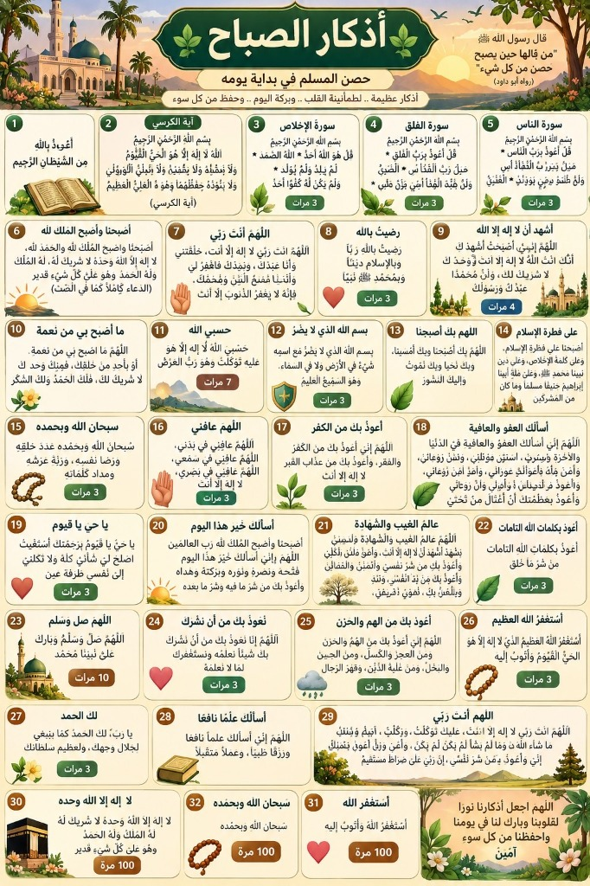
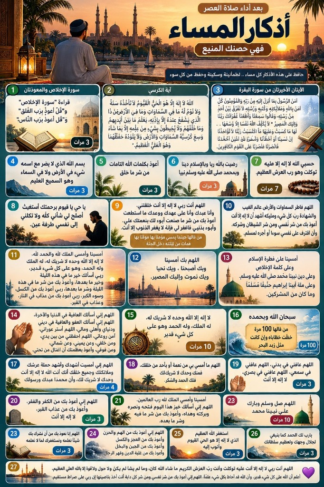
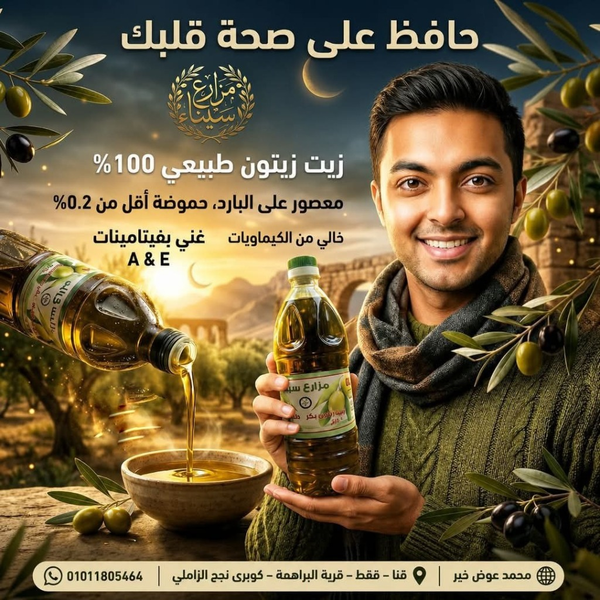
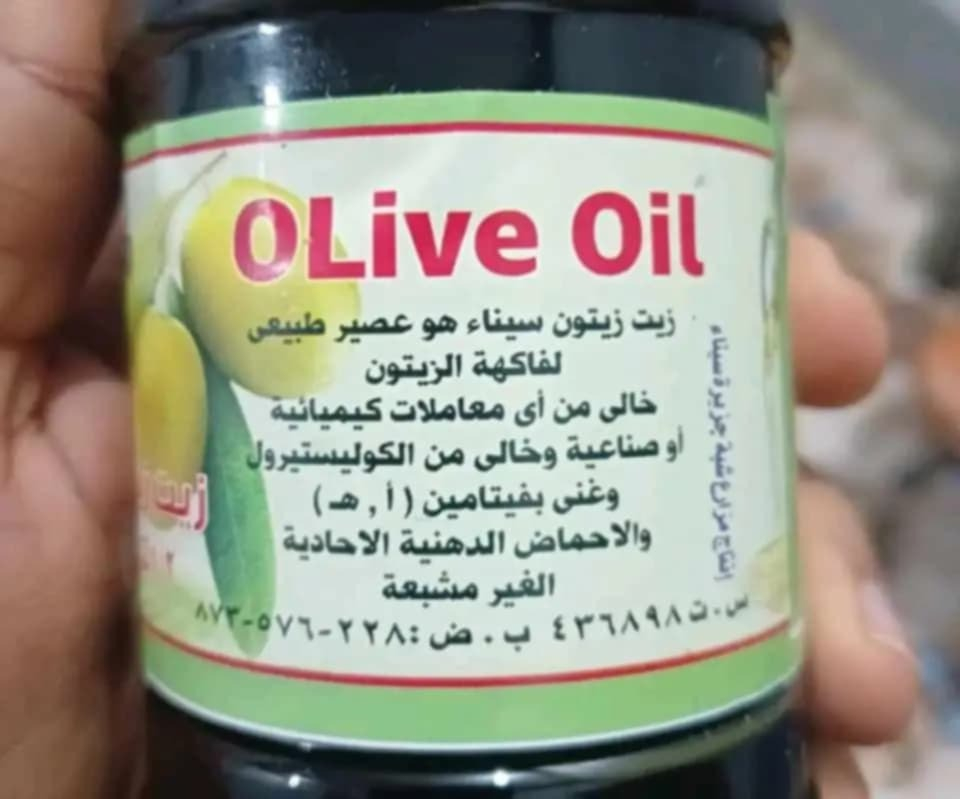

⚖️ بياناتك الشخصية وحساب الوزن المثالي والسعرات بالجرام
دقة علمية 100%📊 نتائجك الدقيقة: الوزن المثالي والصحي لطولك وسنك + الماكروز بالجرامات
🎬 فيديو كرتوني لشخص بشري (قبل الالتزام وبعد الالتزام بالتغير السريع والسلوموشن Slow-Motion)
شاهد الشكل المتوقع للشخص البشري قبل الالتزام وبعد الالتزام بالتغير السريع وبشكل سلوموشن (Slow-Motion) واضح يبرز نحت الخصر ونزول الدهون وبروز العضلات بناءً على نظام الأكل والسعرات والتمرين:
🍽️ جدول وجباتك اليومي المقترح (تنوع اقتصادي وصحي بدون إجبار على ربع كيلو لحم يومياً)
🔔 نظام التذكير اليومي بنزول الجيم، الجداول التدريبية، والإشعارات التحفيزية
⏰ ضبط منبه وتذكير نزول الجيم اليومي
حدد موعد تمرينك اليومي ليصلك إشعار تحفيزي عشوائي مع تنبيه صوتي وتذكير بجدول عضلات اليوم وأذكار الصباح والمساء:
📅 جدول تمرينك المقترح لهذا الأسبوع
🥗 موسوعة أكثر من 60,000 وجبة وبديل صحي محسوب بالجرامات والسعرات (66,880 وجبة)
ضغط البنش المستوي بالبار
📐 خطوات الأداء الصحيح 100% لتجنب أي إصابات:
💪 جميع التمارين لكل عضلة في الجسم مع الفيديو الكرتوني ولينك اليوتيوب
🏋️ اختر نظام التمارين المناسب لمستواك وهدفك
🛡️ أذكار الصباح والمساء كاملة قراءة فقط من الصور المرفوعة + لينك سماعها على اليوتيوب أثناء التمرين
⚠️ تأكيد هام جداً على أهمية أذكار الصباح والمساء: المحافظة على قراءة أذكار الصباح والمساء وسماعها أثناء التمرين هي حصنك المنيع (بإذن الله) من العين والحسد والإصابات والكسل، وتمنحك طمأنينة القلب وبركة في قوتك وصحتك طوال اليوم!
🌅 قراءة أذكار الصباح كاملة من الصورة المرفوعة (اضغط للتكبير الكامل)

🌆 قراءة أذكار المساء كاملة من الصورة المرفوعة (اضغط للتكبير الكامل)

🕋 المصحف الشريف كاملاً (114 سورة) بصوت 20 قارئاً من نخبة القراء مع تحميل كل سورة MP3
إسلام صبحي • مشاري راشد • محمد اللحيدان • سعود الشريم • محمد أيوب • مصطفى إسماعيل • محمد رفعت • سلمان العتيبي • منصور السالمي • أحمد العجمي • ياسر الدوسري • علي جابر • محمود علي البنا • وديع اليمني • عبد الباسط عبد الصمد • ماهر المعيقلي • يوسف الصقير • إدريس أبكر • محمد صديق المنشاوي • محمود خليل الحصري
🛡️ أذكار الصباح والمساء كاملة (قراءة فقط من الصور المرفوعة + لينك سماعها على اليوتيوب أثناء التمرين + PDF/PNG)
⚠️ تأكيد هام جداً على أهمية أذكار الصباح والمساء: المحافظة اليومية على قراءة أذكار الصباح والمساء هي حصن المسلم المنيع، تحفظك بحفظ الله من كل سوء وعين وحسد وإصابة أثناء التمرين وطوال يومك، وتملأ قلبك بالسكينة والطمأنينة والبركة!
🌅 لوحة أذكار الصباح المرفوعة كاملة للقراءة (حصن المسلم في بداية يومه)
🌆 لوحة أذكار المساء المرفوعة كاملة للقراءة (بعد أداء صلاة العصر فهي حصنك المنيع)
📖 القراءة النصية الكاملة لجميع الأذكار المستخرجة من الصور المرفوعة (مع عداد التكرار):
التذكير بالأشهر الحُرُم الأربعة ومواسم الطاعات والصيام
﴿ إِنَّ عِدَّةَ الشُّهُورِ عِندَ اللَّهِ اثْنَا عَشَرَ شَهْرًا فِي كِتَابِ اللَّهِ يَوْمَ خَلَقَ السَّمَاوَاتِ وَالْأَرْضَ مِنْهَا أَرْبَعَةٌ حُرُمٌ ۚ ذَٰلِكَ الدِّينُ الْقَيِّمُ ۚ فَلَا تَظْلِمُوا فِيهِنَّ أَنفُسَكُمْ ﴾
🌟 مواسم الصيام الفاضلة (يوم عرفة • العشر الأوائل من ذي الحجة • عاشوراء ويوماً قبله أو بعده • ستة من شوال)
📿 عدادات التسبيح والأذكار التفاعلية الـ 4 وأهميتها في التوفيق والبركة
🌿 الرقية الشرعية الكاملة للقراءة أونلاين مع إمكانية تحميلها (PDF / PNG)
🕌 سنن يوم الجمعة المباركة
🤲 أدعية الأنبياء والرسل من القرآن الكريم (قراءة فقط وتدبر)
🕌 سلسلة السيرة النبوية العطرة — للشيخ نبيل العوضي (30 حلقة مرتبة للمشاهدة المباشرة)
📺 فتح السلسلة الكاملة على يوتيوب🦁 سلسلة الشخصية القوية — د. ياسر الحزيمي (مرتبة للمشاهدة المباشرة على الموقع)
📺 فتح سلسلة الشخصية القوية على يوتيوب🛌 حاسبة دورات النوم الصحي والاستيقاظ المبكر لصلاة الفجر
يتكون النوم الصحي من دورات مدة كل منها 90 دقيقة. الاستيقاظ في نهاية الدورة يمنحك نشاطاً فائقاً لصلاة الفجر والإنتاجية:
🌟 أهمية الاستيقاظ المبكر لصلاة الفجر في الإنتاجية والتوفيق:
• قال النبي ﷺ: «اللَّهُمَّ بَارِكْ لِأُمَّتِي فِي بُكُورِهَا» و «مَنْ صَلَّى الصُّبْحَ فَهُوَ فِي ذِمَّةِ اللَّهِ».
• علمياً وطبياً: ساعات الفجر الأولى تشهد أعلى تركيز لهرمونات النشاط الذهني، مع صفاء الذهن وهدوء الكون مما يضاعف استيعابك الدراسي وبناءك العضلي وتوفيق الله لك في يومك.
🍅 حاسبة ومؤقت تقنية البومودورو (Pomodoro) للمذاكرة العميقة
🌧️ استوديو أصوات الطبيعة المتنوعة، غزارة المطر بأكثر من درجة، والتحكم في درجة الصوت
غزارة المطر الواقعي (بأكثر من درجة)
اختر درجة غزارة المطر ومستوى الصوت:
رعد هادئ في الأفق
أصوات رعد عميقة مريحة للأعصاب
أمواج النيل والبحر الهادئة
حركة أمواج متناغمة للتأمل والتركيز
عصافير الفجر والغابة
تغريد عصافير الصباح الباكر
هدوء الليل والنجوم
أجواء ليلية هادئة للنوم العميق
نسيم الهواء بين أشجار الزيتون
حفيف أوراق الشجر والنسيم العليل
🏆 إصدار شهادة التقدير والالتزام الاحترافية (بدون أي أخطاء + تحميل PNG)
🫒 قسم زيت زيتون مزارع سيناء — ذهب سيناء السائل (طبيعي بكر 100%)
عصرة أولى على البارد • طبيعي بكر 100% • حموضة أقل من 0.2% • خالٍ من الكوليسترول والكيماويات • غني بفيتامينات A & E
زيت زيتون مزارع سيناء — طبيعي بكر 100%
رفيقك الأول في كل وجبة صحية داخل NileFitPro! زيت زيتون سيناء هو عصير طبيعي بكر 100% نقي لفاكهة الزيتون من مزارع شبه جزيرة سيناء المباركة، معصور على البارد (حموضة أقل من 0.2%)، خالٍ تماماً من أي معاملات كيميائية أو صناعية وخالٍ من الكوليسترول.


حماية القلب والشرايين
غني بالأحماض الدهنية الأحادية غير المشبعة ومضادات الأكسدة التي تحفظ صحة القلب وتخفض الكوليسترول الضار.
حموضة أقل من 0.2%
عصرة أولى على البارد 100% خالٍ من أي إضافات أو معاملات كيميائية أو صناعية وخالٍ تماماً من الكوليسترول.
غني بفيتامينات A & E
يدعم المناعة ونضارة البشرة واستشفاء الأنسجة العضلية ومفاصل الرياضيين بفضل فيتامين (أ، هـ).
للتواصل والاستفسار المباشر
01011805464
محمد عوض خير — تليفونياً أو واتساب أو تليجرام